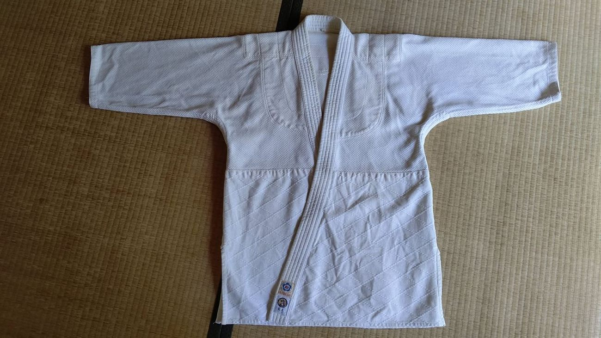
稽古の跡が、残るもの。
道具は、時間を映す。
What remains are the marks of practice. A tool reflects time.
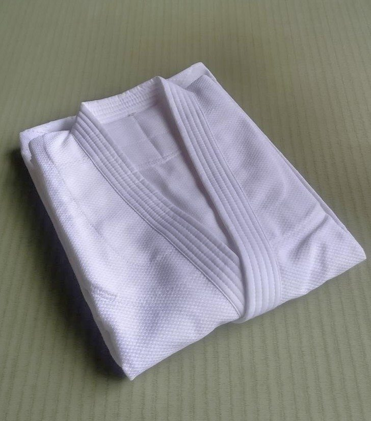
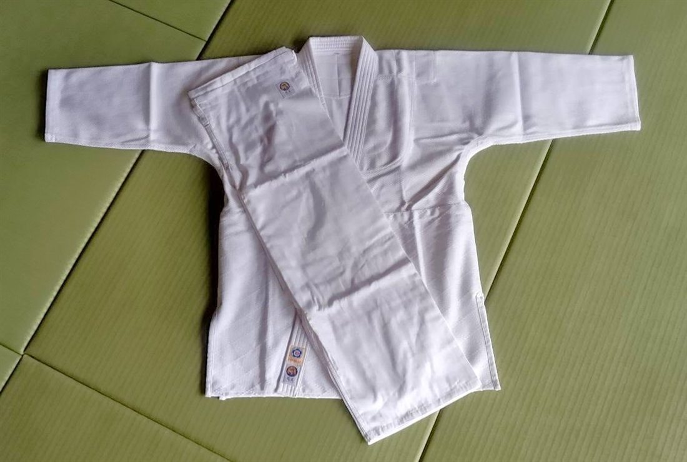
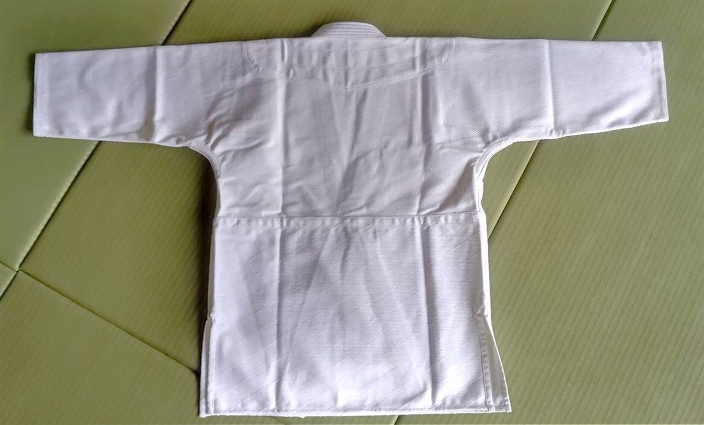
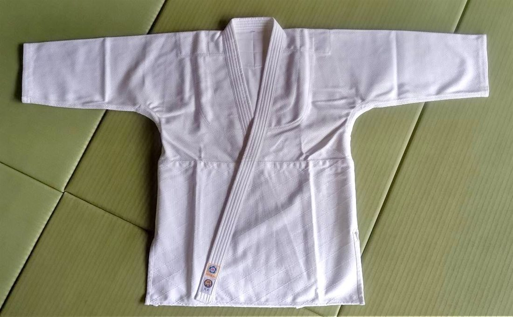
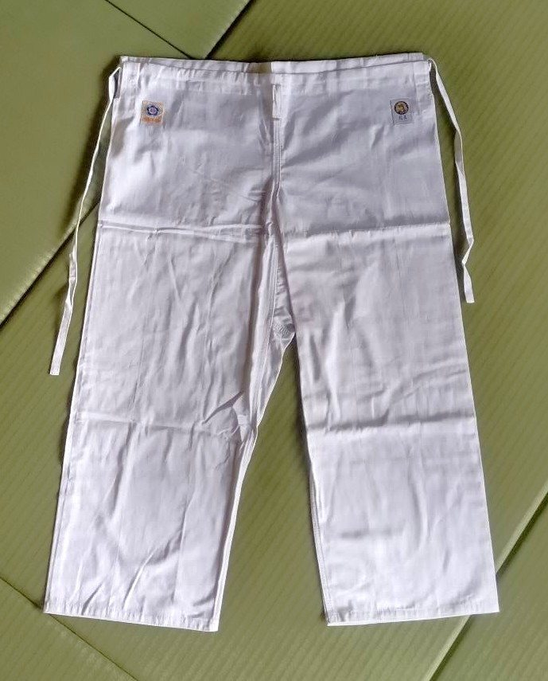
Bleached single-weave aikido gi (jacket, trousers & white belt)
綿100%。上衣・ズボンのセット。背継ぎのない仕様で、受け身に障りのない背面。刺し子生地による耐久度と、一重で季節問わず使用できる基本の一着です。（合気会公認マーク付／縫製 海外）
〜3号 ¥8,880／4〜6号 ¥9,870。白帯をつける場合 ＋¥660。公式直販の価格です。
| 号 | 身長 | A着丈/B裄/Cズボン丈 |
|---|---|---|
| 000 | 100–120 | 44/50/55 |
| 0 | 130–140 | 58/58/69 |
| 1 | 140–150 | 65/62/76 |
| 2 | 150–160 | 72/66/83 |
| 3 | 160–170 | 79/70/90 |
| 4 | 170–180 | 86/74/97 |
| 5 | 180–190 | 93/78/104 |
| 6 | 190〜 | 100/82/111 |
A 着丈 B 裄丈 C ズボン丈（cm）
襟端にお名前を刺繍できます。配置・書体・糸色を画面で確認しながらご指定いただけます。
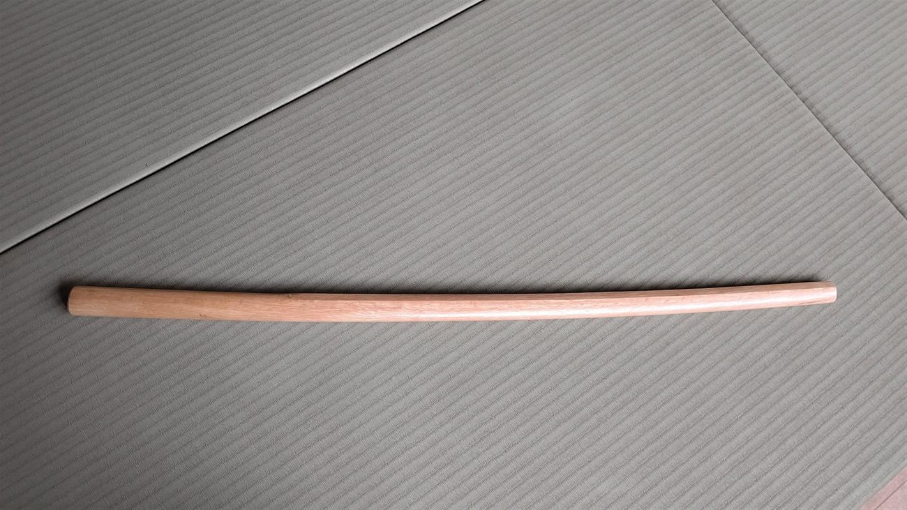
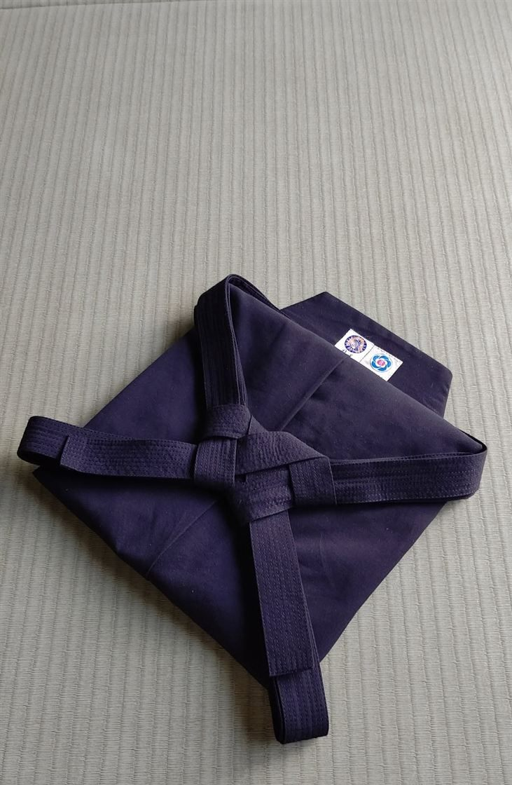
Aikido hakama — black
ポリエステル65%・レーヨン35%。22〜28号。折り目が保たれ、稽古を重ねても崩れにくい仕立て。合気会公認マーク付。夏には、吸汗速乾・防透・日本製生地のストレッチ袴も。
黒 — 22〜24号 ¥6,540／25〜26号 ¥7,000／27〜28号 ¥7,770（税込）。夏用ストレッチ袴は ¥9,000。
| 号 | 袴丈(cm) | 価格（税込） |
|---|---|---|
| 22 | 83 | ¥6,540 |
| 23 | 87 | ¥6,540 |
| 24 | 91 | ¥6,540 |
| 25 | 95 | ¥7,000 |
| 26 | 99 | ¥7,000 |
| 27 | 102 | ¥7,770 |
| 28 | 106 | ¥7,770 |
※袴丈は、後ろ側の紐下から裾までの長さです。夏用ストレッチ袴（23〜28号）も同寸法です。
袴にお名前を刺繍できます。配置・書体・糸色を画面で確認しながらご指定いただけます。
稽古に必要なものを、龍王の名のもとに一つずつ。
From gi to weapons and cases — one by one, under the name RYU-OH.
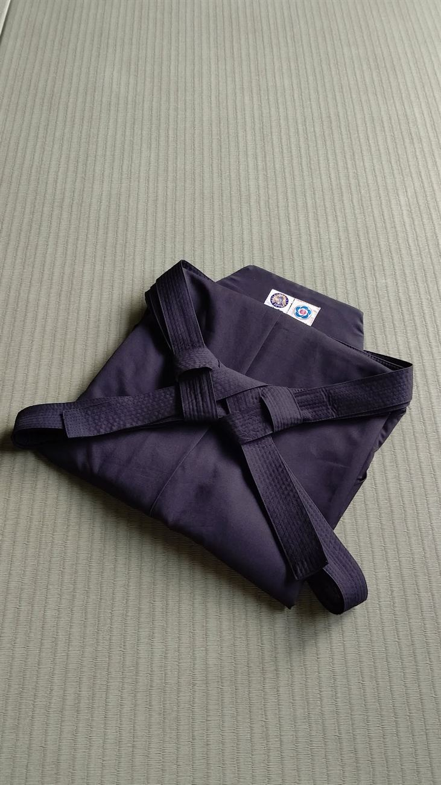
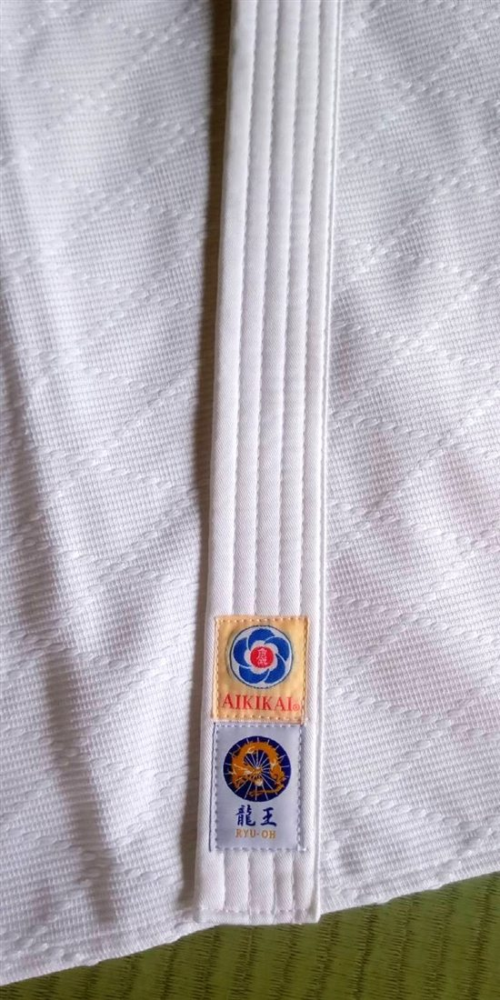
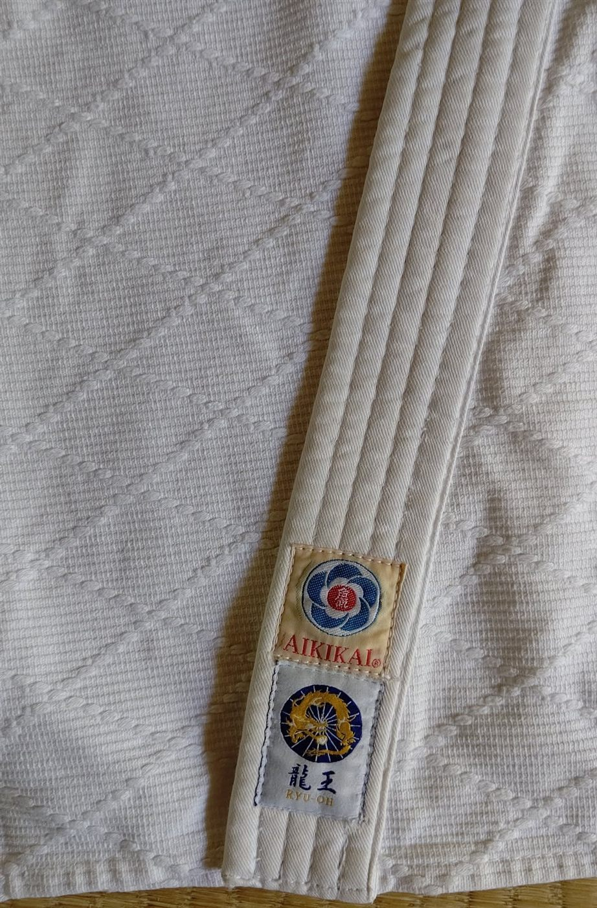
Time tells the story.
新品と、一年以上着用したもの。
洗濯は、石鹸洗剤のみ、洗濯ネットにも入れず
漂白も不使用。
週二回の稽古に着回した。
— 記録のみ。良し悪しは書きません。読む人が判断します。
合氣道の守護神は「天の村雲九鬼さむはら龍王」。
着用する稽古者を守護する想いを込めて、
万有愛護する龍の王を象りました。
——道を守る者が、道に守られるように。
Your first gi.
ご注文は各商品の「STORESで注文」ボタンから、STORESネットショップで承ります。お支払い・配送もSTORES上で完結します。
各セクションの「STORESで注文」から、STORESの商品ページへ進みます。
刺繍を指定するで内容を決め、「この内容で注文へ進む」を押すとご指定内容がコピーされます。STORESの刺繍オプションを購入し、購入手続きの備考欄に貼り付け（ご記入）ください。指示書はPDFでも保存できます。
STORES上でお支払いいただきます。ご注文確認ののち、10日以内に発送します。
送料：基本 ¥1,500（〜160サイズ）。北海道・沖縄は ＋¥1,000。
特定商取引法に基づく表記（STORES） ／ お問い合わせ：ryuou.aiki@gmail.com